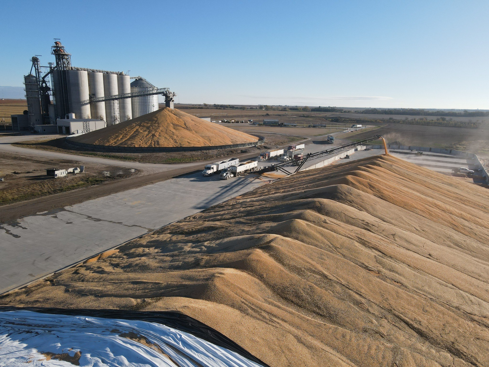

Newton-area properties can include industrial yards, commercial access and public infrastructure. RCC can be considered where pavement sees repeated truck or equipment traffic and the project calls for a durable, efficient concrete surface.
Commercial & IndustrialRCC can be planned for Newton industrial and commercial sites that need dependable pavement for south-central Kansas industrial and municipal work.
Grain StorageGrain facilities serving Newton can use RCC around bins, loadout areas and equipment paths shaped by south-central Kansas industrial and municipal work.
FeedlotFor feed operations near Newton, RCC can create a durable working surface where south-central Kansas industrial and municipal work brings repeated truck and loader traffic.
MunicipalRCC can support Newton public-use pavement when roadway durability, access and the demands of south-central Kansas industrial and municipal work need to be considered together.

LOCAL PROJECT PLANNING
Plan for loading, staging and access
We can review where trucks queue, where equipment turns and which areas need the most pavement durability before developing a construction approach.